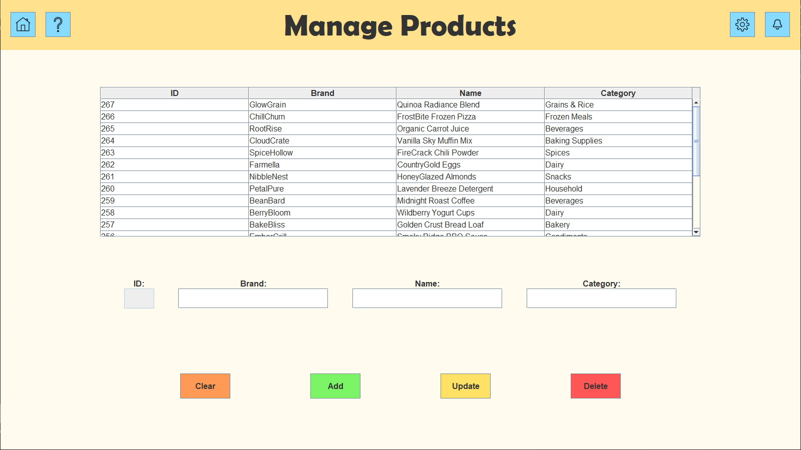
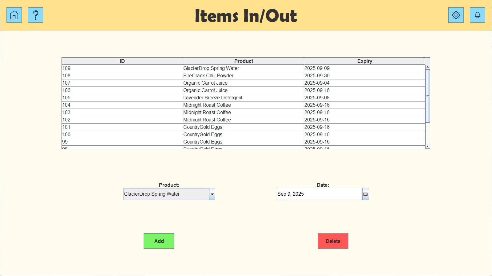
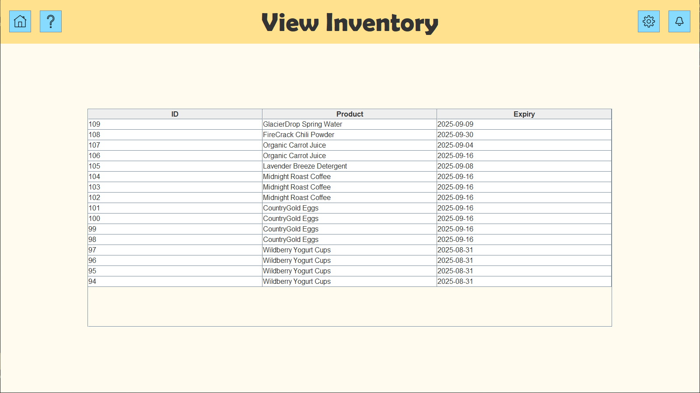

Links
Overview
A desktop application for grocery store inventory management. Made with Java.

Features
Manage Products
Unique entries can be added for each type of product sold at the store. Details like brand and category are included.
Modify Inventory
Inventory items can be added and removed individually. Each item's expiration date is also tracked.
View Inventory
The entire inventory can be viewed here. Filtering and sorting features are planned for future updates.
Technical Details
This application was made with Java, relying on the Swing package for GUI elements. It was developed in IntelliJ IDEA. Maven was used as the build tool. A SQL database is used to store data.